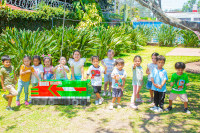

Quem Somos?

A ONG Esperança é uma organização sem fins lucrativos dedicada a transformar vidas por meio da educação, inclusão social e solidariedade. Atuamos em comunidades em situação de vulnerabilidade, oferecendo projetos educativos, oficinas culturais e programas de capacitação profissional que visam gerar oportunidades e promover o desenvolvimento humano. Acreditamos que toda pessoa merece acesso a conhecimento, dignidade e esperança. Por isso, trabalhamos em parceria com escolas, voluntários e empresas para construir um futuro mais justo e igualitário para crianças, jovens e famílias. Nosso compromisso é inspirar mudanças reais — fortalecendo laços comunitários e incentivando o protagonismo social de cada indivíduo. “Transformar o mundo começa com um pequeno gesto de esperança.”
Missão, Visão e Valores
- Missão: Promover oportunidades de crescimento humano.
- Visão: Um futuro com mais igualdade social.
- Valores: Solidariedade, Ética e Transparência.
Fale Conosco
Email: contato@ongesperanca.org
Telefone: (51) 99999-9999
Endereço: Rua da Solidariedade, 123 - Boa Esperança/RS